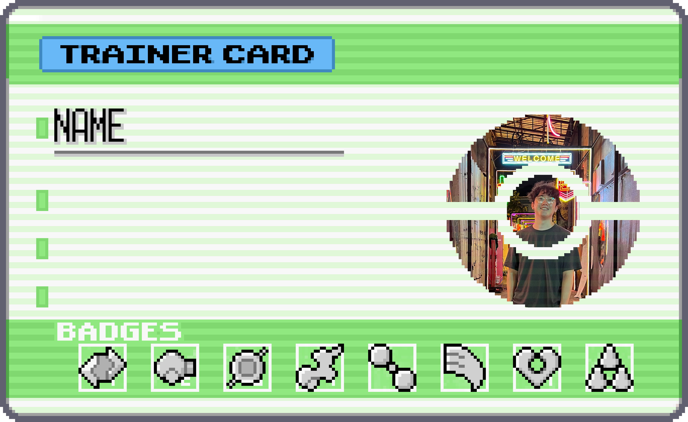

Use [esc] to go back
Matthew Wu
My name is Matthew (or Matt) and I am a software developer! I'll be
graduating from UMCP in May with a double degree in Computer Science and
Mechanical Engineering, then moving to Seattle to join Amazon full-time!
I love to create things using software and hardware skills. In my free
time I like to make projects like this or ones involving my 3D printer.
I also love my electric skateboard and watching Netflix to wind down.